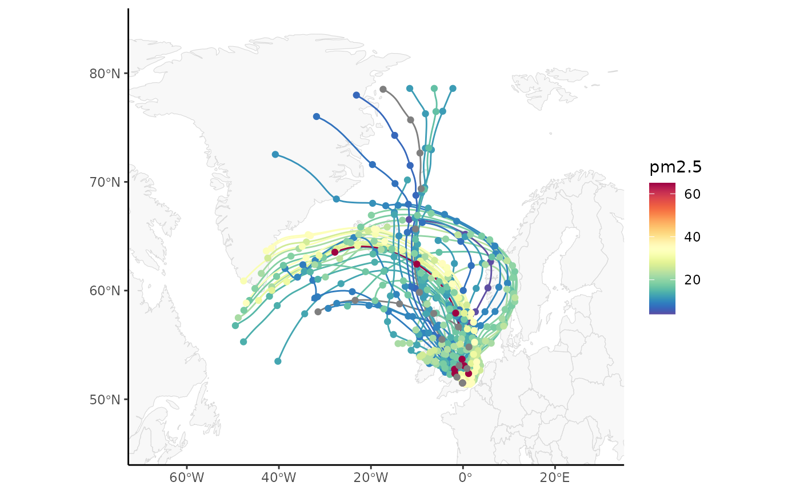

Trajectory Analysis
Analyse and visualise HYSPLIT trajectory files.
ggopenair-traj.Rmd
library(ggopenair)
library(ggplot2)
library(sf)
#> Linking to GEOS 3.10.2, GDAL 3.4.1, PROJ 8.2.1; sf_use_s2() is TRUEImporting Data
Currently, trajectories should be imported using openair as this functionality hasn’t yet been ported to ggopenair.
# import trajectories
traj <- openair::importTraj(site = "london", year = 2010)
# import data for North Kensington
kc1 <- openair::importAURN("kc1", year = 2010)
kc1 <- dplyr::select(kc1, date, nox, no2, o3, pm2.5, pm10)
# now merge with trajectory data by 'date'
traj <- dplyr::left_join(traj, kc1, by = "date")
traj_red <-
openair::selectByDate(
traj,
start = "15/4/2010",
end = "21/4/2010"
)Path Plots
ggopenair exports traj_plot(), which is
extremely similar to trajPlot().
traj_plot(traj_red, colour = "pm2.5") +
scale_opencolours_c() +
theme_classic()
Binned Plots
traj_level() is also exported, which again behaves
almost identically to trajLevel(). All statistic types are
supported. Note that using scale transforms on the “fill” aesthetic is
almost always recommended.
traj_level(traj_red) +
scale_opencolours_c(
trans = "sqrt",
label = scales::label_percent(scale = 1)
) +
labs(fill = "% Trajectories\n(sqrt scale)\n") +
theme_classic()Traj Clustering
traj_cluster() also exists in ggopenair,
but is waiting on the next CRAN release of openair to be
fully functional.
–> –> –> –> –>